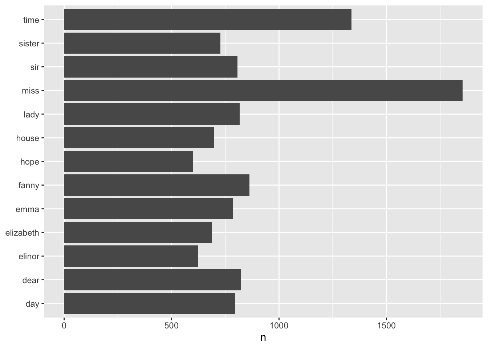
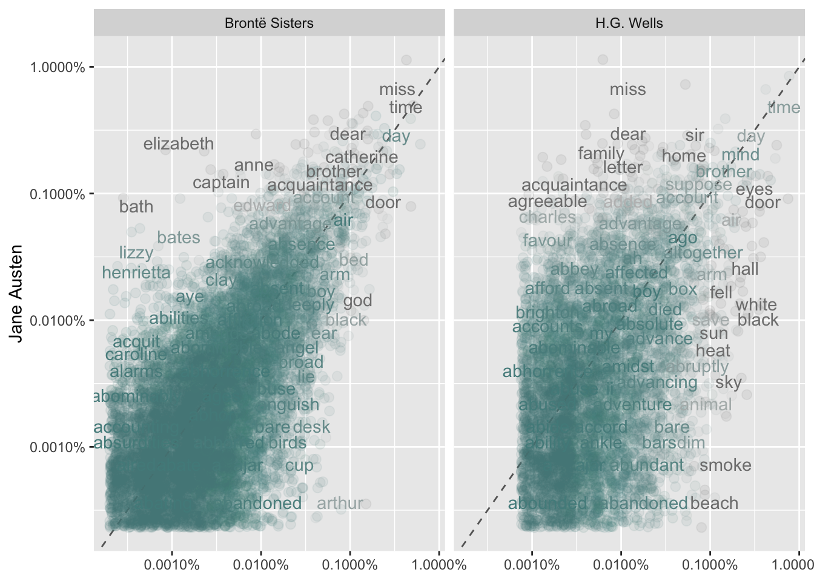

Chapter 3 The tidy text format
library(tidytext)
library(tidyverse)1.1 Contrasting tidy text with other data structures
A tidy text format is a table with one-token-per-row. Structuring text data in this way means that it conforms to tidy data principles and can be manipulated with a set of consistent tools.
Tidytext is different from the way other data structure is organized (e.g text, Corpus, and Document-term matrix).
1.2 The unnest_tokens function
The unnest function allow us to
Example: Given the text below, change it to tidytext:
text <- c("Because I could not stop for Death -",
"He kindly stopped for me -",
"The Carriage held but just Ourselves -",
"and Immortality")Before chaning text to tidytext format, we need to change it to dataframe first:
text_df <- tibble(line = 1:4, text = text)
text_df## # A tibble: 4 x 2
## line text
## <int> <chr>
## 1 1 Because I could not stop for Death -
## 2 2 He kindly stopped for me -
## 3 3 The Carriage held but just Ourselves -
## 4 4 and ImmortalityTo chnage text to be use for tidy text analysis, we need to convert this so that it has one-token-per-document-per-row using unnest_tokens functions as shown below:
unnest_tokens_
Split a column into tokens using the tokenizers package, splitting the table into one-token-per-row. This function supports non-standard evaluation through the tidyeval framework.
So, we change it to tidy text format below:
text_df %>%
unnest_tokens(word, text) # word is name of the output column (word in this case) and text is the column where the data is coming from (text_df, has column with the data)## # A tibble: 20 x 2
## line word
## <int> <chr>
## 1 1 because
## 2 1 i
## 3 1 could
## 4 1 not
## 5 1 stop
## 6 1 for
## 7 1 death
## 8 2 he
## 9 2 kindly
## 10 2 stopped
## 11 2 for
## 12 2 me
## 13 3 the
## 14 3 carriage
## 15 3 held
## 16 3 but
## 17 3 just
## 18 3 ourselves
## 19 4 and
## 20 4 immortalityNow, we’ve split each row so that there is one token (word) in each row of the new data frame; the default tokenization in unnest_tokens() is for single words, but there is other such as ngrams,sentences, lines, character_ shingles and regex.
From tibble above, we can see that:
Other columns, such as the line number each word came from, are retained.
Punctuation has been stripped.
By default,
unnest_tokens()converts the tokens to lowercase, which makes them easier to compare or combine with other datasets. (Use the to_lower = FALSE argument to turn off this behavior).
Examples of using the unnest functions:
library(janeaustenr)d <- tibble(txt = prideprejudice)3.0.1 Sentences
d %>%
unnest_tokens(sentence, txt, token = "sentences")## # A tibble: 7,066 x 1
## sentence
## <chr>
## 1 "pride and prejudice by jane austen chapter 1 it is a truth universally acknowledge…
## 2 "however little known the feelings or views of such a man may be on his first entering a …
## 3 "\"my dear mr."
## 4 "bennet,\" said his lady to him one day, \"have you heard that netherfield park is let at…
## 5 "mr."
## 6 "bennet replied that he had not."
## 7 "\"but it is,\" returned she; \"for mrs."
## 8 "long has just been here, and she told me all about it.\""
## 9 "mr."
## 10 "bennet made no answer."
## # … with 7,056 more rows3.0.2 Word
d %>%
unnest_tokens(word, txt)## # A tibble: 122,204 x 1
## word
## <chr>
## 1 pride
## 2 and
## 3 prejudice
## 4 by
## 5 jane
## 6 austen
## 7 chapter
## 8 1
## 9 it
## 10 is
## # … with 122,194 more rows3.0.3 Chapter
d %>%
unnest_tokens(chapter, txt, token = "regex", pattern = "Chapter [\\\\d]")## # A tibble: 1 x 1
## chapter
## <chr>
## 1 "pride and prejudice\n\nby jane austen\n\n\n\nchapter 1\n\n\nit is a truth universally ack…3.0.4 By n-gram
d %>%
unnest_tokens(ngram, txt, token = "ngrams", n = 2)## # A tibble: 122,203 x 1
## ngram
## <chr>
## 1 pride and
## 2 and prejudice
## 3 prejudice by
## 4 by jane
## 5 jane austen
## 6 austen chapter
## 7 chapter 1
## 8 1 it
## 9 it is
## 10 is a
## # … with 122,193 more rows3.0.5 tri-gram
d %>%
unnest_tokens(ngram, txt, token = "ngrams", n = 3)## # A tibble: 122,202 x 1
## ngram
## <chr>
## 1 pride and prejudice
## 2 and prejudice by
## 3 prejudice by jane
## 4 by jane austen
## 5 jane austen chapter
## 6 austen chapter 1
## 7 chapter 1 it
## 8 1 it is
## 9 it is a
## 10 is a truth
## # … with 122,192 more rows3.0.6 character_ shingles : Defined character
d %>%
unnest_tokens(shingle, txt, token = "character_shingles", n = 4)## # A tibble: 536,526 x 1
## shingle
## <chr>
## 1 prid
## 2 ride
## 3 idea
## 4 dean
## 5 eand
## 6 andp
## 7 ndpr
## 8 dpre
## 9 prej
## 10 reju
## # … with 536,516 more rows
Tidytext concept
1.3 Tidying the works of Jane Austen
library(janeaustenr)
library(dplyr)
library(stringr)
original_books <- austen_books() %>%
group_by(book) %>%
mutate(linenumber = row_number(),
chapter = cumsum(str_detect(text, regex("^chapter [\\divxlc]",
ignore_case = TRUE)))) %>%
ungroup()
original_books## # A tibble: 73,422 x 4
## text book linenumber chapter
## <chr> <fct> <int> <int>
## 1 "SENSE AND SENSIBILITY" Sense & Sensibility 1 0
## 2 "" Sense & Sensibility 2 0
## 3 "by Jane Austen" Sense & Sensibility 3 0
## 4 "" Sense & Sensibility 4 0
## 5 "(1811)" Sense & Sensibility 5 0
## 6 "" Sense & Sensibility 6 0
## 7 "" Sense & Sensibility 7 0
## 8 "" Sense & Sensibility 8 0
## 9 "" Sense & Sensibility 9 0
## 10 "CHAPTER 1" Sense & Sensibility 10 1
## # … with 73,412 more rowstidy_books <- original_books %>%
unnest_tokens(word, text)
tidy_books## # A tibble: 725,055 x 4
## book linenumber chapter word
## <fct> <int> <int> <chr>
## 1 Sense & Sensibility 1 0 sense
## 2 Sense & Sensibility 1 0 and
## 3 Sense & Sensibility 1 0 sensibility
## 4 Sense & Sensibility 3 0 by
## 5 Sense & Sensibility 3 0 jane
## 6 Sense & Sensibility 3 0 austen
## 7 Sense & Sensibility 5 0 1811
## 8 Sense & Sensibility 10 1 chapter
## 9 Sense & Sensibility 10 1 1
## 10 Sense & Sensibility 13 1 the
## # … with 725,045 more rowsNow that the data is in one-word-per-row format, we can do some text analysis, such as removing stop words. We can remove the stop words using anti_join() as shown below:
data(stop_words)
tidy_books <- tidy_books %>%
anti_join(stop_words)## Joining, by = "word"The stop_words dataset in the
tidytext packagecontains stop words from three lexicons. We can use them all together, as we have here, or filter() to only use one set of stop words if that is more appropriate for a certain analysis.
3.0.6.1 Counting most common words
We canuse dplyr’s count() to find the most common words in all the books as a whole.
tidy_books %>%
count(word , sort = TRUE)## # A tibble: 13,914 x 2
## word n
## <chr> <int>
## 1 miss 1855
## 2 time 1337
## 3 fanny 862
## 4 dear 822
## 5 lady 817
## 6 sir 806
## 7 day 797
## 8 emma 787
## 9 sister 727
## 10 house 699
## # … with 13,904 more rowsAgain, we can use ggplot here to plot the word distribution as obtain above:
tidy_books %>%
count(word , sort = TRUE) %>%
filter( n > 600) %>%
mutate(words = reorder(word , n)) %>%
ggplot(aes(word, n))+
geom_col()+
xlab(NULL) we can flip the cordinate using coord_flip() to show the graph in better way:
tidy_books %>%
count(word , sort = TRUE) %>%
filter( n > 600) %>%
mutate(words = reorder(word , n)) %>%
ggplot(aes(word, n))+
geom_col()+
xlab(NULL)+
coord_flip()
1.4 The gutenbergr package
The gutenbergr package provides access to the public domain works from the Project Gutenberg collection. The package includes tools both for downloading books (stripping out the unhelpful header/footer information), and a complete dataset of Project Gutenberg metadata that can be used to find works of interest.
The function gutenberg_download() downloads one or more works from Project Gutenberg by ID. Other functions are available that you can explore metadata, pair Gutenberg ID with title, author, language, etc., or gather information about authors.
1.5 Word frequencies
A common task in text mining is to look at word frequencie. We will explore that is this section using science fiction and fantasy novels by H.G. Wells, who lived in the late 19th and early 20th centuries.
Lets start with the book these four books: The Time Machine, The War of the Worlds, The Invisible Man, and The Island of Doctor Moreau and download them using the gutenberg_download() and the Project Gutenberg ID numbers for each novel as shown below:
library(gutenbergr)
hgwells <- gutenberg_download(c(35, 36, 5230, 159))Tidytexting and removing stop words
tidy_hgwells <- hgwells %>%
unnest_tokens(word, text) %>%
anti_join(stop_words)## Joining, by = "word"Most common words
tidy_hgwells %>%
count(word, sort = TRUE)## # A tibble: 11,769 x 2
## word n
## <chr> <int>
## 1 time 454
## 2 people 302
## 3 door 260
## 4 heard 249
## 5 black 232
## 6 stood 229
## 7 white 222
## 8 hand 218
## 9 kemp 213
## 10 eyes 210
## # … with 11,759 more rowsAnother works:
bronte <- gutenberg_download(c(1260, 768, 969, 9182, 767))tidy_bronte <- bronte %>%
unnest_tokens(word, text) %>%
anti_join(stop_words)## Joining, by = "word"tidy_bronte %>%
count(word, sort = TRUE)## # A tibble: 23,050 x 2
## word n
## <chr> <int>
## 1 time 1065
## 2 miss 855
## 3 day 827
## 4 hand 768
## 5 eyes 713
## 6 night 647
## 7 heart 638
## 8 looked 601
## 9 door 592
## 10 half 586
## # … with 23,040 more rowsCalculating the frequency for each word for the works of Jane Austen, the Brontë sisters, and H.G. Wells by binding the data frames together.
library(tidyr)
frequency <- bind_rows(mutate(tidy_bronte, author = "Brontë Sisters"),
mutate(tidy_hgwells, author = "H.G. Wells"),
mutate(tidy_books, author = "Jane Austen")) %>%
mutate(word = str_extract(word, "[a-z']+")) %>%
count(author, word) %>%
group_by(author) %>%
mutate(proportion = n / sum(n)) %>%
select(-n) %>%
spread(author, proportion) %>%
gather(author, proportion, `Brontë Sisters`:`H.G. Wells`)We use str_extract() here because the UTF-8 encoded texts from Project Gutenberg have some examples of words with underscores around them to indicate emphasis (like italics). The tokenizer treated these as words, but we don’t want to count “any” separately from “any” as we saw in our initial data exploration before choosing to use str_extract()
library(scales)
# expect a warning about rows with missing values being removed
ggplot(frequency, aes(x = proportion, y = `Jane Austen`, color = abs(`Jane Austen` - proportion))) +
geom_abline(color = "gray40", lty = 2) +
geom_jitter(alpha = 0.1, size = 2.5, width = 0.3, height = 0.3) +
geom_text(aes(label = word), check_overlap = TRUE, vjust = 1.5) +
scale_x_log10(labels = percent_format()) +
scale_y_log10(labels = percent_format()) +
scale_color_gradient(limits = c(0, 0.001), low = "darkslategray4", high = "gray75") +
facet_wrap(~author, ncol = 2) +
theme(legend.position="none") +
labs(y = "Jane Austen", x = NULL)## Warning: Removed 41357 rows containing missing values (geom_point).## Warning: Removed 41359 rows containing missing values (geom_text).
TODO:
Come back and re-read again the section from 1.5 Word frequencies